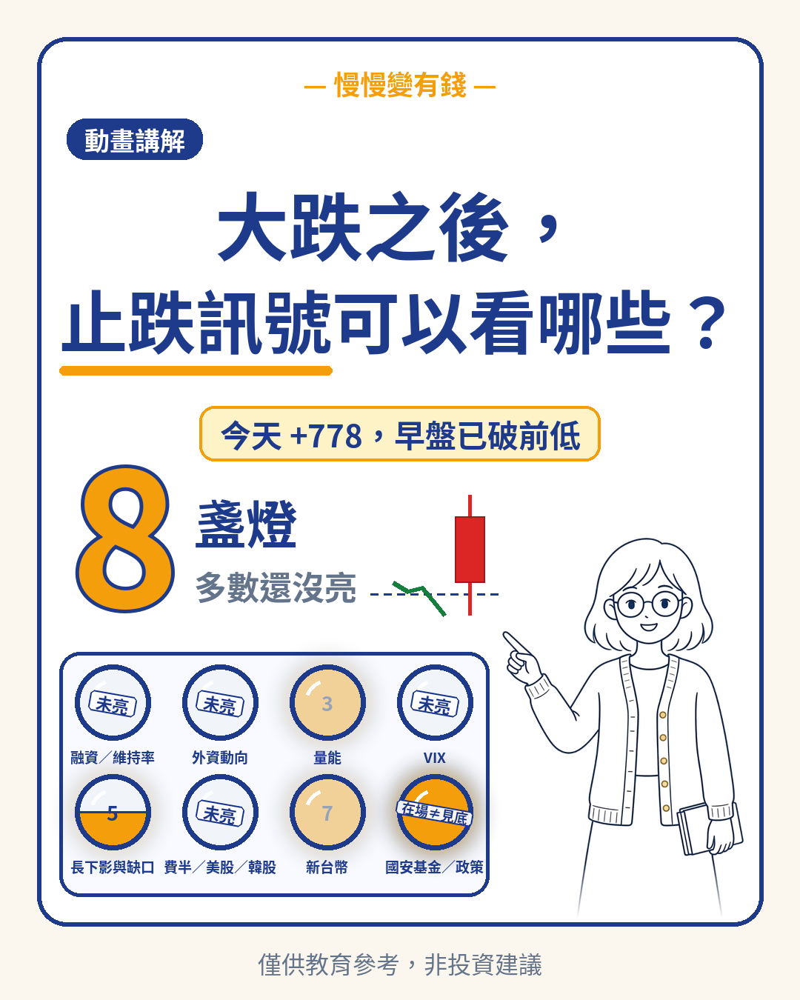

今天收盤看到紅字，心情會鬆一點，這很正常。今天收紅 778 點：加權收在 36,811.89，漲 778.60 點、漲幅 2.16%。可是早盤最低 35,442.41，已經跌破上週五大跌那天的低點 35,738.68。反彈這麼大，就是止跌了嗎？先不要急。這是觀察清單，不是買進訊號。
用 8 盞燈一起看。狀態分成空心、問號、半亮，還有「在場≠見底」。問號只代表有一點跡象，還不能算亮。不要把任何一盞當成買進訊號。
融資／維持率：空心
這盞看借錢買股的賣壓有沒有減輕，維持率有沒有從低檔回升。上週五上市融資一天少 491 億，6,462 戶被追繳，還不能說見底回升。11/23 融資餘額官方尚未公布，所以是空心。被追繳時股票為什麼會被賣掉，可以看融資追繳。
外資動向：空心
這盞看賣超有沒有縮小，或轉成連續買超。指數漲，外資卻賣超 289 億，比上週五的 95.11 億還多。指數紅、外資還在賣，這盞沒亮。
量能：問號
這盞看上漲時成交有沒有放大。今天上漲，成交 1兆1,066.77 億，大於上週五的 9,353.10 億，反彈有人參與，但只有一天，所以只標問號。
恐慌指數：空心
這盞看波動預期有沒有從高檔回落。台指 VIX 不降反升，收 55.36，比上週五的 52.13 更高。數字高，是覺得未來波動大，不是已經跌完。美股 VIX 最新收盤仍是上週五的 35.89，美股今天尚未開盤。這盞是空心。
長下影與跳空回補：半亮
這盞看盤中殺低後有沒有被買回，跳空有沒有填上。今天有下影，開盤跳空也回補了，但早盤先破前低，實體又比下影長，只算半亮。
- 開盤35,899.48
- 最低35,442.41跌破上週低點 35,738.68
- 最高37,108.20
- 收盤36,811.89+778.60（+2.16%）
費半／美股／韓股：空心
這盞看海外有沒有先止穩。費半上週五跌 10.73%；韓股今天還收跌 3.31%；美股今天尚未開盤。海外沒亮，這盞是空心。
新台幣：問號
這盞看匯率有沒有止貶。銀行間收盤 32.895，比前收 32.936 升 4.1 分，短線有止貶，還不是趨勢翻轉，所以只標問號。
短線止貶，還不是趨勢翻轉
國安基金與限空令：在場≠見底
這盞看政策在不在場，不是底部到了沒有。國安基金已經進場，今天起禁止平盤以下放空。過去 9 次，有 6 次宣布後還再跌超過 5%。標成「在場≠見底」。
燈要一起看
一盞亮了不夠。今天收紅，也不代表止跌完成。就算往後多數燈都亮了，仍然只是觀察清單，不是買進訊號。
先顧緊急預備金，不借錢，不 All in。生活和短期要用的錢留在旁邊，不要拿去跟這一根紅 K 對賭。
來源
- 證交所 FMTQIK：收盤指數、成交金額。MI_INDEX 為同日收盤來源，討論稿未另附網址。
- 證交所 MI_5MINS_HIST：開、高、低。討論稿未另附網址。
- 證交所 MI_MARGN（11/20）：上市融資餘額。11/23 官方尚未公布。
- 證交所 BFI82U：外資賣超。討論稿未附檔案網址，同日數字見中央社。
- 期交所 台指選擇權波動率指數檔：台指 VIX。
- 美股 VIX：Yahoo Finance 日線，最新收盤為 11/20。討論稿未附網址。
- 央行：新台幣銀行間收盤。
- 金管會新聞稿（2026-11-21）：限空令。
- 中央社（2026-11-23）：費半、法人、國安基金。
- 中央社（2026-11-09）：國安基金前 9 次。
- 經濟日報（2026-11-23）：盤勢報導。
- 韓聯社（賣方側車）、韓聯社（開盤）。收盤跌幅取自韓聯社收盤稿，討論稿未附該則網址。